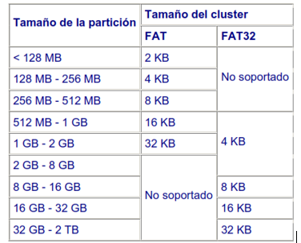

Sistema de archivos.
Un sistema de archivos es una estructura que permite tanto el almacenamiento de información en una partición como su modificación y recuperación. Para que sea posible trabajar en una partición es necesario asignarle previamente un sistema de archivos. Esta operación se denomina dar formato a una partición.
Generalmente cada sistema de archivos ha sido diseñado para obtener el mejor rendimiento con un sistema operativo concreto (FAT para DOS, FAT32 para Windows 98, NTFS para Windows NT, HPFS para OS/2…). Sin embargo, es usual que el mismo sistema operativo sea capaz de reconocer múltiples sistemas de archivos.
Todos los sistemas de archivos consisten en estructuras necesarias para almacenar y manejar datos, estas estructuras normalmente incluyen un registro de arranque del SO, archivos, directorios y un sistema de archivos desempeña tres funciones principales:
- Control de espacio disponible, asignado, dañado
- Mantenimiento de directorios, archivos.
- Control del lugar donde las distintas porciones de cada archivo se encuentran físicamente almacenadas en el disco. Hoy día existen varios sistemas de archivos en uso. Distintos sistemas de archivos pueden ser usados (reconocidos) por diferentes sistemas operativos. Algunos sistemas operativos sólo pueden reconocer un sistema de archivos, otros pueden reconocer varios sistemas de archivos diferentes. Algunos de los sistemas de archivos más comunes son los que se detallan a continuación:
FAT (File Allocate Table, tabla de asignación de archivos)
Este sistema de archivos se basa, como su nombre indica, en una tabla de asignación de archivos o FAT. Esta tabla es el índice del disco, es el TOC (tabla de contenidos). Almacena los grupos utilizados por cada archivo, los grupos libres y los defectuosos. Como consecuencia de la fragmentación de archivos, es corriente que los distintos grupos que contienen un archivo se hallen desperdigados por toda la partición. La FAT es la encargada de seguir el rastro de cada uno de los archivos por la partición.
Clúster, Grupo o unidad de asignación es la unidad mínima de almacenamiento de un archivo en una partición y está formada por uno o varios sectores contiguos del disco. Esto quiere decir que el espacio real ocupado por un archivo en disco será siempre múltiplo del tamaño del grupo. Además, cada grupo puede almacenar información de un solo archivo. Si no cabe en un solo grupo, se utilizarán varios (no necesariamente contiguos).
1 clúster es el mínimo espacio usado para cualquier lectura o escritura. Por esta causa es frecuente que quede mucho espacio perdido (slack space), no usado a continuación del clúster de datos almacenado allí.
Para hacernos una idea del nefasto resultado de un tamaño de grupo incorrecto, consideremos dos archivos de 1 byte cada uno. Si el tamaño del grupo es de 32 KB, se utilizarán dos grupos y el espacio real ocupado en disco habrá sido de 64
KB = ¡65.536 bytes! en vez de 2 bytes, como sería de esperar.
Este sistema posee importantes limitaciones: nombres de archivos cortos; tamaño máximo de particiones de 2 GB; grupos (clústeres) demasiados grades, con el consiguiente desaprovechamiento de espacio en disco; elevada fragmentación, que ralentiza el acceso a los archivos. Pero tiene a su favor su sencillez y compatibilidad con la mayoría de sistemas operativos. Debido a que la FAT de este sistema de archivos tiene entradas de 16 bits (por eso, a veces se
llama FAT16), sólo se pueden utilizar 216 = 65.536 grupos distintos. Esto implica que, con el fin de aprovechar la totalidad del espacio de una partición, los grupos tengan tamaños distintos en
función del tamaño de la partición. Por ejemplo, con un grupo de 16 KB se puede almacenar hasta
216 grupos * 16 KB/grupo = 220 KB = 1 GB de información. El límite de la partición (2 GB) se obtiene al considerar un grupo máximo de 32 KB (formado por 64 sectores consecutivos de 512 bytes).
VFAT (Virtual FAT)
Este sistema de archivos logra remediar uno de los mayores problemas del sistema FAT: los nombres de archivos y directorios sólo podían contener 8 caracteres de nombre y 3 de extensión. Con VFAT, se logra ampliar este límite a 255 caracteres entre nombre y extensión.
La mayor ventaja de VFAT es que tiene plena compatibilidad con FAT. Por ejemplo, es factible utilizar la misma partición para dos sistemas operativos que utilicen uno FAT y otro VFAT (MS-DOS y Windows 95). Cuando entremos desde MS-DOS, los nombres largos de archivos se transforman en nombres cortos según unas reglas establecidas, y pueden ser utilizados de la manera habitual. De todas maneras, hay que prestar cierta atención cuando se trabaja desde MS-DOS con archivos que tienen nombres largos: no se deben realizar operaciones de copiado o borrado, ya que se corre el riesgo de perder el nombre largo del archivo y quedarnos sólo con el corto. Desde Windows 95, se trabaja de forma transparente con nombres cortos y largos.
Tanto las particiones FAT como las VFAT están limitadas a un tamaño máximo de 2 GB. Esta es la razón por la que los discos duros mayores de este tamaño que vayan a trabajar con alguno de los dos sistemas, necesiten ser particionados en varias particiones más pequeñas. El sistema de archivos FAT32 ha sido diseñado para aumentar este límite a 2 TB (1 terabyte = 1024 GB).
FAT32 (FAT de 32 bits)
El sistema FAT32 permite trabajar con particiones mayores de 2 GB. No solamente esto, sino que además el tamaño del grupo (clúster) es mucho menor y no se desperdicia tanto espacio como ocurría en las particiones FAT. La conversión de FAT a FAT32, se puede realizar desde el propio
Hay que tener en cuenta que ni MS-DOS ni las primeras versiones de Windows 95 pueden acceder a los datos almacenados en una partición FAT32. Esto quiere decir que si tenemos en la misma partición instalados MS-DOS y Windows 98, al realizar la conversión a FAT32 perderemos la posibilidad de arrancar en MS-DOS (opción "Versión anterior de MS-DOS" del menú de arranque de Windows 98). Con una conversión inversa se puede recuperar esta opción. Por estos motivos de incompatibilidades, no es conveniente utilizar este sistema de archivos en particiones que contengan datos que deban ser visibles desde otros sistemas de archivos. En los demás casos, suele ser la opción más recomendable.
En la siguiente tabla, se comparan los tamaños de grupo utilizados según el tamaño de la partición y el sistema de archivos empleado:

NTFS (New Technology File System, sistema de archivos de nueva tecnología)
Este es el sistema de archivos que permite utilizar todas las características de seguridad y protección de archivos de Windows. NTFS sólo es recomendable para particiones superiores a 400 MB, ya que las estructuras del sistema consumen gran cantidad de espacio. NTFS permite definir el tamaño del grupo (clúster), a partir de 512 bytes (tamaño de un sector) de forma independiente al tamaño de la partición.
Las técnicas utilizadas para evitar la fragmentación y el menor desaprovechamiento del disco, hacen de este sistema de archivos el sistema ideal para las particiones de gran tamaño requeridas en grandes ordenadores y servidores.
HPFS (High Performance File System, sistema de archivos de alto rendimiento)
HPFS es el sistema de archivos propio de OS/2. Utiliza una estructura muy eficiente para organizar los datos en las particiones.
HPFS no utiliza grupos sino directamente sectores del disco (que equivalen a un grupo de 512 bytes). En vez de utilizar una tabla FAT al principio de la partición, emplea unas bandas distribuidas eficazmente por toda la partición.
De esta forma se consigue, suprimir el elevado número de movimientos que los cabezales de lectura/escritura tienen que realizar a la tabla de asignación en una partición FAT.
El resultado de este sistema es una mayor velocidad de acceso y un menor desaprovechamiento del espacio en disco.